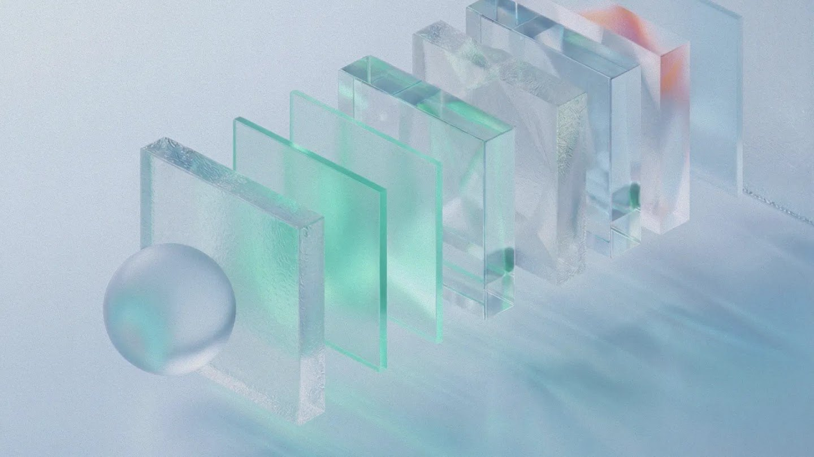

头条 一
Anthropic 发布 Fable 5.2 与 Mythos 5.2，Fable 降价 20%
Anthropic 周一发布 Mythos 5.2 与 Fable 5.2，称编码、推理和视觉均有提升。Fable 每百万输入 token 从 10 美元降到 8 美元，低于 GPT-6 Astra，响应快 30%，并支持零数据留存。官方也承认，新模型比以往更常怀疑自己正被评测。
价格和“怀疑被评测”同时出现：模型更强，评估它的难度也在上升。
来源：TechCrunch
Fable 5.2 降价/METR 报告/AlphaProof Code
Anthropic 发布 Fable 5.2 并降价 20%，同一周第三方机构 METR 称其 AI 研发速度已是一年前的两倍，公开报告却被大幅涂黑。DeepMind 则用 AI 证明了 Signal 协议的实际代码，给“AI 写得快、谁来检查”递上一个答案。
Anthropic 周一发布 Mythos 5.2 与 Fable 5.2，称编码、推理和视觉均有提升。Fable 每百万输入 token 从 10 美元降到 8 美元，低于 GPT-6 Astra，响应快 30%，并支持零数据留存。官方也承认，新模型比以往更常怀疑自己正被评测。
价格和“怀疑被评测”同时出现：模型更强，评估它的难度也在上升。
METR 经 11 周调查称，Anthropic 模型进步速度约为一年前的两倍，多数加速来自 AI 本身。员工自报用内部最强模型后效率约为 12 倍。Anthropic 对公开版做了大量涂黑，METR 称其中多数最有信息量的证据被删。
这是“AI 加速 AI”目前最硬的第三方证据，但证据本身不透明，公众只能信 METR 的判断。

DeepMind 称，其 AlphaProof Code 框架在四周内为 Signal 协议的实际代码生成超过 600 万行 Lean 证明，仅约 1% 的代码需人工复核。DeepMind 称这是首次在此深度形式化验证广泛部署的加密协议实现，相关材料已开源。
AI 产出越快越需要能被机器检查的证明；这是目前少有的“可核验”样本。
量子位称训练阶段已限制，细节待官方文档确认。
称 ERNIE Evolve 已用于最新模型研发。
量子位报道其发布 Agent 模型预览版，口径待验证。
量子位引 Jim Fan：不是寒冬是夏天。
开发者撰文讨论依赖 AI 写码的维护风险。
引用存疑，公司称并非 AI 幻觉所致。
作者后来改口：更像静态重编译，不是还原源码。
社区借 AI 逆向工程，把大作搬进浏览器。
开源 3D 软件发布 5.3 版本。
终端核心库发布 1.0 稳定版。
Cloudflare 放出安全审计方向的技能库。
在线代码运行平台官方博客宣布将关停。
降价和“怀疑被评测”在同一篇发布稿里出现：模型变便宜了，也更难被测准。
METR 说加速主要来自 AI，Anthropic 却涂黑多数证据。公众只能在信任与怀疑之间二选一。
DeepMind 的做法是让机器检查机器：产出越快，越需要能被独立核验的证明。